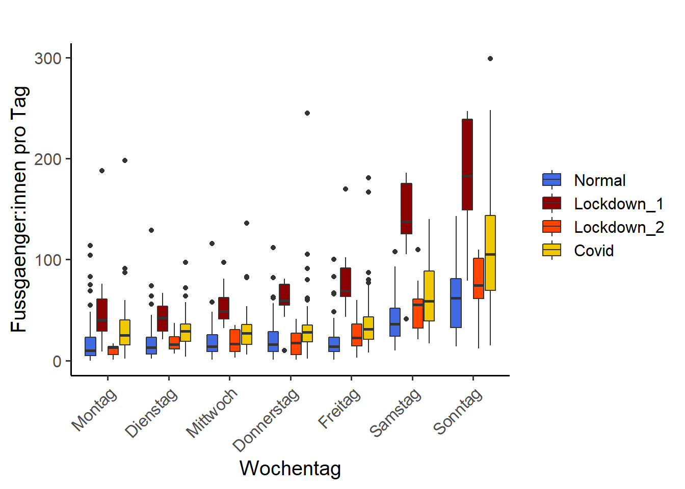

#.################################################################################################# 3. DESKRIPTIVE ANALYSE UND VISUALISIERUNG ######.################################################################################################# 3.1 Verlauf der Besuchszahlen / m ##### Monatliche Summen am Standort# wann beginnt die Datenreihe schon wieder?first(depo_m$Ym)# und wann ist die fertig?last(depo_m$Ym)# Plotteggplot(depo_m, mapping =aes(Ym, Total, group =1))+# group = 1 braucht R, dass aus den Einzelpunkten ein Zusammenhang hergestellt wird#zeichne Lockdown 1geom_rect(mapping =aes(xmin="2020 3", xmax="2020 5",ymin =0, ymax=max(Total+(Total/100*10))),fill ="lightskyblue", alpha =0.4, colour =NA)+#zeichne Lockdown 2geom_rect(mapping =aes(xmin="2020 12", xmax="2021 3", ymin =0, ymax=max(Total+(Total/100*10))), fill ="lightskyblue", alpha =0.4, colour =NA)+geom_line(alpha =0.6, size =1.5)+scale_x_discrete(breaks =c("2019 1", "2019 7","2019 1","2020 1","2020 7","2021 1","2021 7"),labels =c("2019 1", "2019 7","2019 1","2020 1","2020 7","2021 1","2021 7"))+labs(title="", y="Fussgaenger:innen pro Monat", x ="Jahr")+theme_linedraw(base_size =15)+theme(axis.text.x =element_text(angle =45, vjust =1, hjust=1))
# Beachtet, dass ich in der Musterloesung keine Resultate exportiere, untenstehend aber der Code dazu:# ggsave("Entwicklung_Zaehlstelle.png", width=20, height=10, units="cm", dpi=1000, # path = "_fallstudien/_R_analysis/results/")
Aufgabe 2: Wochengang
# mean / d / phasemean_phase_wd <- depo_d %>%group_by(Wochentag, Phase) %>%summarise(Total =mean(Total))# write.csv(mean_phase_wd, "_fallstudien/_R_analysis/results/mean_phase_wd.csv")#plotggplot(data = depo_d)+geom_boxplot(mapping =aes(x= Wochentag, y = Total, fill = Phase))+labs(title="", y="Fussgaenger:innen pro Tag")+scale_fill_manual(values =c("royalblue", "red4", "orangered", "gold2"))+theme_classic(base_size =15)+theme(axis.text.x =element_text(angle =45, vjust =1, hjust=1),legend.title =element_blank())

# ggsave("Wochengang_Lockdown.png", width=15, height=15, units="cm", dpi=1000, # path = "_fallstudien/_R_analysis/results/")# Statistik: Unterschied WE und WO waehrend Lockdown 1t.test(depo_d$Total [depo_d$Phase =="Lockdown_1"& depo_d$Wochenende=="Werktag"], depo_d$Total [depo_d$Phase =="Lockdown_1"& depo_d$Wochenende=="Wochenende"])
Aufgabe 3: Tagesgang
# 3.3 Tagesgang ##### Bei diesen Berechnungen wird jeweils der Mittelwert pro Stunde berechnet. # wiederum nutzen wir dafuer "pipes"Mean_h <- depo %>%group_by(Wochentag, Stunde, Phase) %>%summarise(Total =mean(Total)) # Plotte den Tagesgang, unterteilt nach Wochentagen# Normaltag_norm <-ggplot(subset(Mean_h, Phase %in%c("Normal")), mapping=aes(x = Stunde, y = Total, colour = Wochentag, linetype = Wochentag))+geom_line(size =2)+scale_colour_viridis_d()+scale_linetype_manual(values =c(rep("solid", 5), "twodash", "twodash"))+scale_x_continuous(breaks =c(seq(0, 23, by =2)), labels =c(seq(0, 23, by =2)))+labs(x="Uhrzeit [h]", y="∅ Fussganger_Innen / h", title ="")+lims(y =c(0,25))+theme_linedraw(base_size =15)+theme(legend.position ="right")# Lockdown 1tag_lock_1 <-ggplot(subset(Mean_h, Phase %in%c("Lockdown_1")), mapping=aes(x = Stunde, y = Total, colour = Wochentag, linetype = Wochentag))+geom_line(size =2)+scale_colour_viridis_d()+scale_linetype_manual(values =c(rep("solid", 5), "twodash", "twodash"))+scale_x_continuous(breaks =c(seq(0, 23, by =2)), labels =c(seq(0, 23, by =2)))+labs(x="Uhrzeit [h]", y="∅ Fussganger_Innen / h", title ="")+lims(y =c(0,25))+theme_linedraw(base_size =15)+theme(legend.position ="right")# Lockdown 2tag_lock_2 <-ggplot(subset(Mean_h, Phase %in%c("Lockdown_2")), mapping=aes(x = Stunde, y = Total, colour = Wochentag, linetype = Wochentag))+geom_line(size =2)+scale_colour_viridis_d()+scale_linetype_manual(values =c(rep("solid", 5), "twodash", "twodash"))+scale_x_continuous(breaks =c(seq(0, 23, by =2)), labels =c(seq(0, 23, by =2)))+labs(x="Uhrzeit [h]", y="∅ Fussganger_Innen / h", title ="")+lims(y =c(0,25))+theme_linedraw(base_size =15)+theme(legend.position ="right")# Covidtag_covid <-ggplot(subset(Mean_h, Phase %in%c("Covid")), mapping=aes(x = Stunde, y = Total, colour = Wochentag, linetype = Wochentag))+geom_line(size =2)+scale_colour_viridis_d()+scale_linetype_manual(values =c(rep("solid", 5), "twodash", "twodash"))+scale_x_continuous(breaks =c(seq(0, 23, by =2)), labels =c(seq(0, 23, by =2)))+labs(x="Uhrzeit [h]", y="∅ Fussganger_Innen / h", title ="")+lims(y =c(0,25))+theme_linedraw(base_size =15)+theme(legend.position ="right")# Arrange und Export Tagesgangggarrange(tag_lock_1+# plot 1 aufrufenrremove("x.text")+# plot 1 braucht es nicht alle Achsenbeschriftungenrremove("x.title"), tag_lock_2+# plot 2 aufrufenrremove("y.text")+# bei plot 2 brauchen wir keine Achsenbeschriftungrremove("y.title")+rremove("x.text")+rremove("x.title"), tag_norm, tag_covid+rremove("y.text")+rremove("y.title"),ncol =2, nrow =2, # definieren, wie die plots angeordnet werdenheights =c(0.9, 1), # beide plots sind wegen der fehlenden Beschriftung nicht gleich hochwidths =c(1,0.9), labels =c("a) Lockdown 1", "b) Lockdown 2", "c) Normal", "d) Covid"),label.x =0.1, # wo stehen die Plottitellabel.y =0.99,common.legend =TRUE, legend ="bottom") # wir brauchen nur eine Legende, unten